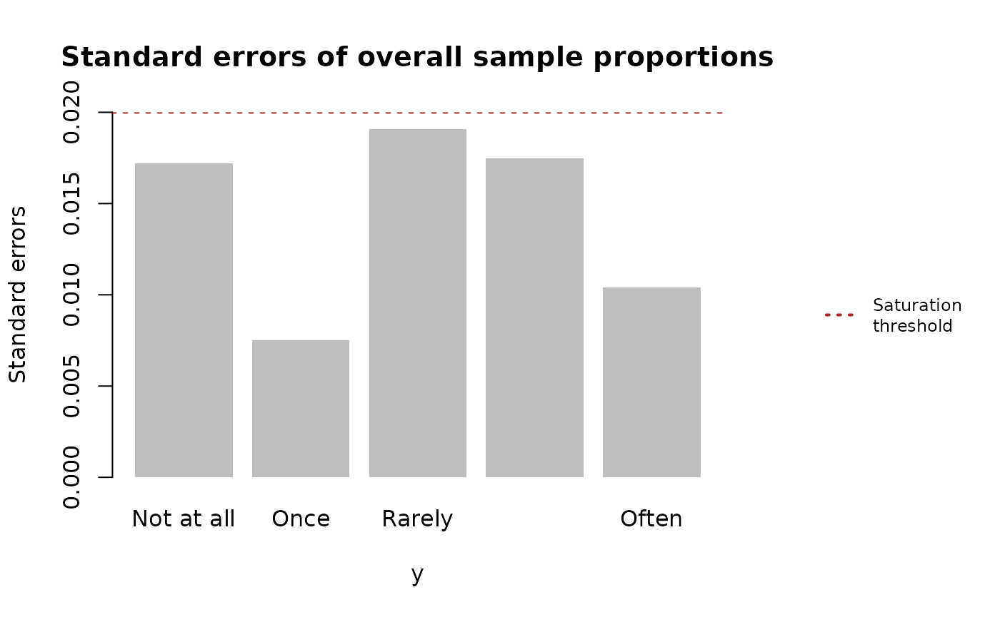

satpt
satpt.RmdInstallation
You can install the current released version of satpt
from CRAN with
install.packages("satpt")Development version
To get a bug fix or to use a feature from the development version,
you can install the development version of satpt from GitHub.
# install.packages("remotes")
remotes::install_github("deboonstra/satpt")Next, call the library function to satpt to
obtain all the functionality of the package.
Examples
With the package installed and loaded into the current R environment, we may begin exploring the functionality of this package. To start, we will load in the example EIN data to work with.
# Load EIN data
data(ein)
str(ein)
#> 'data.frame': 643 obs. of 3 variables:
#> $ wave: num 2 3 3 2 2 3 3 3 2 3 ...
#> $ q1 : chr "Broadrange|Wholegenome|MNGS" "Broadrange|Wholegenome|MNGS" "Broadrange|MNGS" "Broadrange" ...
#> $ q2 : Factor w/ 5 levels "Not at all","Once",..: 4 5 4 2 3 3 3 3 4 4 ...We will start by examining whether the responses collected in the
second question (q2) of the EIN data achieved
saturation.
levels(ein$q2)
#> [1] "Not at all" "Once" "Rarely" "Sometimes" "Often"The res object below is a satpt object that
contains the results of the saturation point analysis and is structurely
a R list with eleven elements produced by main
function satpt::satpt(). You may see the documentation
of satpt::satpt() for a detailed description of all the
elements of a satpt object.
res <- satpt::satpt(y = ein$q2, threshold = 0.02)For a basic examination of the saturation point analysis, you may
simply print the results object. This will provide information of
whether all the standard errors of the response categories are less than
or equal to the saturation threshold along with sample proportions and
standard errors of the response categories. In this example, the
saturation threshold was 0.02, the default value used in satpt::satpt()
is 0.05, and all the standard errors are less than 0.02. Thus,
saturation of the response categories is achieved.
print(res)
#> Saturation achieved? Yes
#> Overall Sample Proportions and Standard Errors
#> ==============================================
#> y
#> Statistics Not at all Once Rarely Sometimes Often
#> Proportion 0.2531 0.0375 0.3688 0.2656 0.0750
#> SE 0.0172 0.0075 0.0191 0.0175 0.0104When a more detailed look at the analysis is warranted, simply call
summary()
on the returned satpt object, as seen below.
summary(res)
#>
#> Saturation point analysis of sample proportions
#> ===============================================
#>
#> Saturation achieved? Yes
#> Saturation threshold of 0.02
#> Responses collected from a sample size of 640
#>
#> Overall sample proportions
#> ============================================
#> y
#> Not at all Once Rarely Sometimes Often
#> Overall 0.2531 0.0375 0.3688 0.2656 0.075
#>
#>
#> Overall standard errors
#> =========================================
#> y
#> Not at all Once Rarely Sometimes Often
#> Overall 0.0172 0.0075 0.0191 0.0175 0.0104
#>
#> Pooled standard errors? NoThe goal of summary()
is to provide a conditional comphrensive overview of the saturation
point analysis similar in style to results produced by SAS
procedures.
Another way of examining saturation point analysis is graphical by plotting the standard errors of the overall sample proportions for each response category in relation to the saturation threshold. With all the standard errors falling below the saturation threshold, we would say that we have achieved saturation for these responses.
graphics::par(oma = c(0, 0, 0, 8))
plot(res)
# adding legend
satpt::legend_right(
legend = "Saturation\nthreshold",
col = "firebrick", lty = 3, lwd = 2,
cex = 0.75
)
Possibility of response bias
There will be times the data collection process leads to responss
with the potiental of having response bias. Thus, when performing
saturation point analysis we must test for response bias and if response
bias is present, we must account for that bias in the saturation point
analysis. One example where response could be present is collecting data
in waves based on non-responses in the previous waves. The EIN
data previously explored was collected in this manner. Presented below
is the number of responses collected for the second question for each
data collection wave.
stats::ftable(x = ein$wave)
#> x 1 2 3
#>
#> 324 147 172So, we are going to examine the responses collected in each wave for saturation, where the previous wave of responses will be included in the current wave and the saturation threshold is 0.02.
First data collection period
During the first data collection period, we are going to assume response bias is not possible because the responses were not collected due to non-responses in the previous wave, as there was no “previous” data collected.
# Subsetting the data to only include data collected during the first wave
ein1 <- subset(x = ein, subset = wave == 1)
# Performing saturation point analysis
res1 <- satpt::satpt(
y = ein1$q2,
threshold = 0.02,
dimnames = "Responses to survey"
)
print(res1)
#> Saturation achieved? No
#> Overall Sample Proportions and Standard Errors
#> ==============================================
#> Responses to survey
#> Statistics Not at all Once Rarely Sometimes Often
#> Proportion 0.2623 0.0463 0.3364 0.2716 0.0833
#> SE 0.0244 0.0117 0.0262 0.0247 0.0154Second data collection period
The results from the first data collection period show that
saturation was not achieved, as not all of the standard errors for the
response categories are less than or equal to the saturation threshold.
So, we’ll examine the data collected during the first and second data
collection period for saturation of responses. For this analysis, we
must account for the possibility of response bias by specifying the
by argument in satpt::satpt()
because the responses collected during the second wave include responses
from EIN members who did not respond previously.
# Subsetting the data to only include data collected during the first and second
# waves of data
ein2 <- subset(x = ein, subset = wave %in% c(1, 2))
# Performing saturation point analysis
res2 <- satpt::satpt(
y = ein2$q2,
by = ein2$wave,
threshold = 0.02,
dimnames = c("by" = "Data collection period", "y" = "Responses to survey")
)
print(res2)
#> Saturation achieved? No
#> Overall Sample Proportions and Standard Errors
#> ==============================================
#> Responses to survey
#> Statistics Not at all Once Rarely Sometimes Often
#> Proportion 0.2596 0.0426 0.3574 0.2596 0.0809
#> SE 0.0202 0.0093 0.0221 0.0202 0.0126With the inclusion of the responses from the second data collection, saturation is almost achieved. However, more data is needed to achieve saturation. Before examining all the data for saturation, we will examine whether response bias was present when including responses from the first and second data collection periods.
# Chi-squared test for independence
res2$test
#>
#> Pearson's Chi-squared test
#>
#> data: Responses to survey given Data collection period
#> X-squared = 2.3255, df = 4, p-value = 0.6761
# Was pooled standard errors calculated?
res2$pooled_se
#> [1] FALSEThe above Pearson’s \(\chi^{2}\)
test for independence shows that responses bias was not present with a
non-significant p-value. Thus, signifying the responses collected during
the first and second data collection waves are not statistically
different. With no response bias being present, traditional standard
errors for the overall sample proportions of the response categories
were calculated. The FALSE logical R value
returned by pooled_se indicates the standard errors
reported for the overall sampled proportions are not
pooled.
# Summarizing results
sum_res2 <- summary(res2)
# Printing standard errors from summary of results
print(sum_res2$se)
#> Responses to survey
#> Data collection period Not at all Once Rarely Sometimes Often
#> 1 0.0244 0.0117 0.0262 0.0247 0.0154
#> 2 0.0360 0.0151 0.0406 0.0350 0.0218
#> Overall 0.0202 0.0093 0.0221 0.0202 0.0126All data collection periods
The addition of the data from the second collection period did not help to achieve saturation of the responses. So, we are going to examine all the responses collected while adjusting for the potiential of response bias. The results presented below show that saturation was finally achieved and response bias was not present among the collected responses.
res3 <- satpt::satpt(
y = ein$q2,
by = ein$wave,
threshold = 0.02,
dimnames = c("by" = "Collection period", "y" = "Responses to survey")
)
summary(res3)
#>
#> Saturation point analysis of sample proportions
#> ===============================================
#>
#> Saturation achieved? Yes
#> Saturation threshold of 0.02
#> Responses collected from a sample size of 640
#>
#> Data interval and overall sample proportions
#> ============================================
#> Responses to survey
#> Collection period Not at all Once Rarely Sometimes Often
#> 1 0.2623 0.0463 0.3364 0.2716 0.0833
#> 2 0.2534 0.0342 0.4041 0.2329 0.0753
#> 3 0.2353 0.0235 0.4000 0.2824 0.0588
#> Overall 0.2531 0.0375 0.3688 0.2656 0.0750
#>
#>
#> Data interval and overall standard errors
#> =========================================
#> Responses to survey
#> Collection period Not at all Once Rarely Sometimes Often
#> 1 0.0244 0.0117 0.0262 0.0247 0.0154
#> 2 0.0360 0.0151 0.0406 0.0350 0.0218
#> 3 0.0325 0.0116 0.0376 0.0345 0.0180
#> Overall 0.0172 0.0075 0.0191 0.0175 0.0104
#>
#> Pooled standard errors? No
#>
#> Pearson's Chi-squared test
#>
#> data: Responses to survey given Collection period
#> X-squared = 5.4861, df = 8, p-value = 0.7046
#>
#> Response bias present? No
#> Significance level: 0.05
#>
#>
#> Heterogeneity index
#> ====================
#> Categories Index
#> Not at all 0.0091
#> Once 0.0087
#> Rarely 0.0330
#> Sometimes 0.0185
#> Often 0.0083